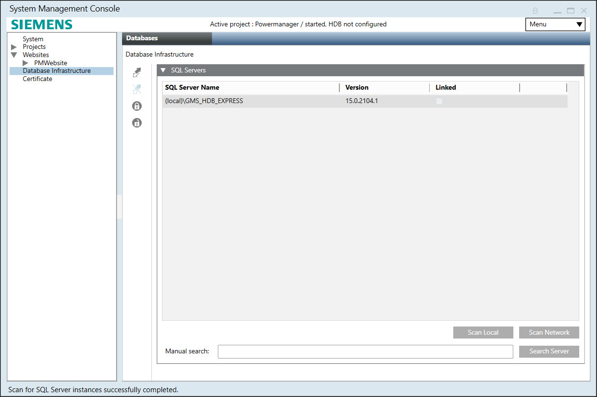

Scan and Link a SQL Server Instance
- A named instance is defined on the SQL Server.
- In the SMC tree, select Database Infrastructure.
- Select the Database tab.
- Select the SQL Servers expander and
For local database, click Scan Local. This detects all SQL Servers on the local computer.
For remote database, do any of the following steps: - Click Scan Network: Detects all SQL Servers on the local network. Only those Server names are displayed that are found within 30 seconds.
- In the Manual search text field, type the Server and instance number, for example, CH1Wxxxx\SQL Server Name and click Search Server (validation of computer name).
This Search Server option is only required when no SQL Server could be found locally or on the network because of the fact that customer system administrators or SQL administrators can setup and hide their SQL servers to remain invisible with the two options of Scan Local and Scan Network. - In the SQL Servers expander, select the SQL Server name.
- Click Link
 .
.
- The server is connected. The server does not yet contain a PowerQuality Database if you connect for the first time.
